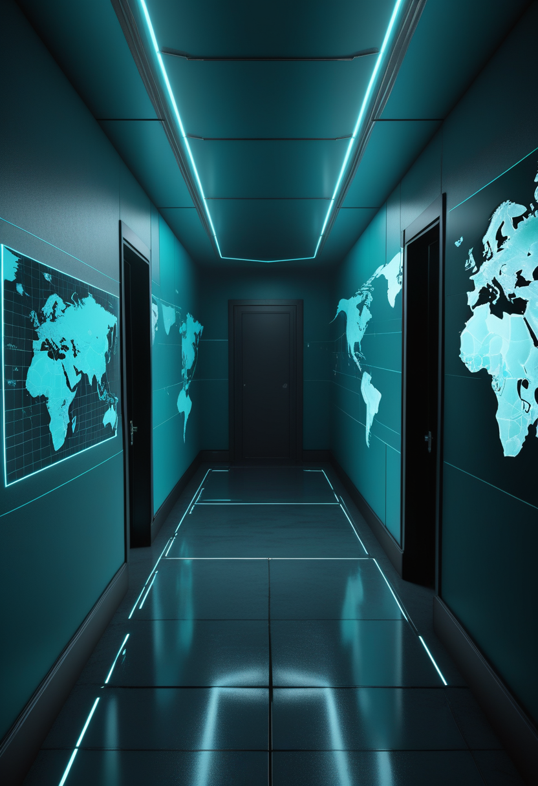
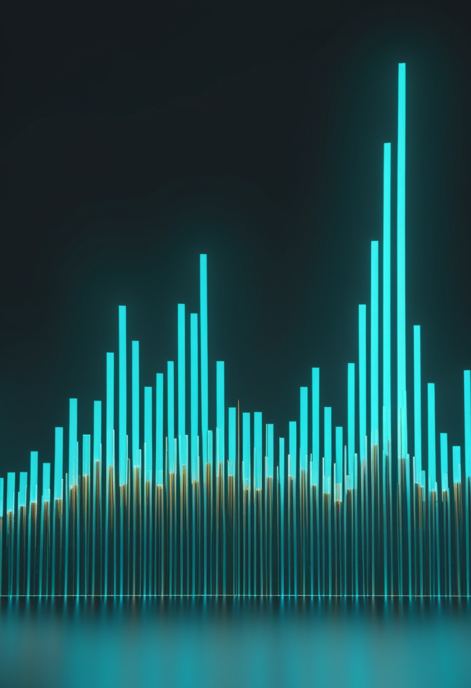
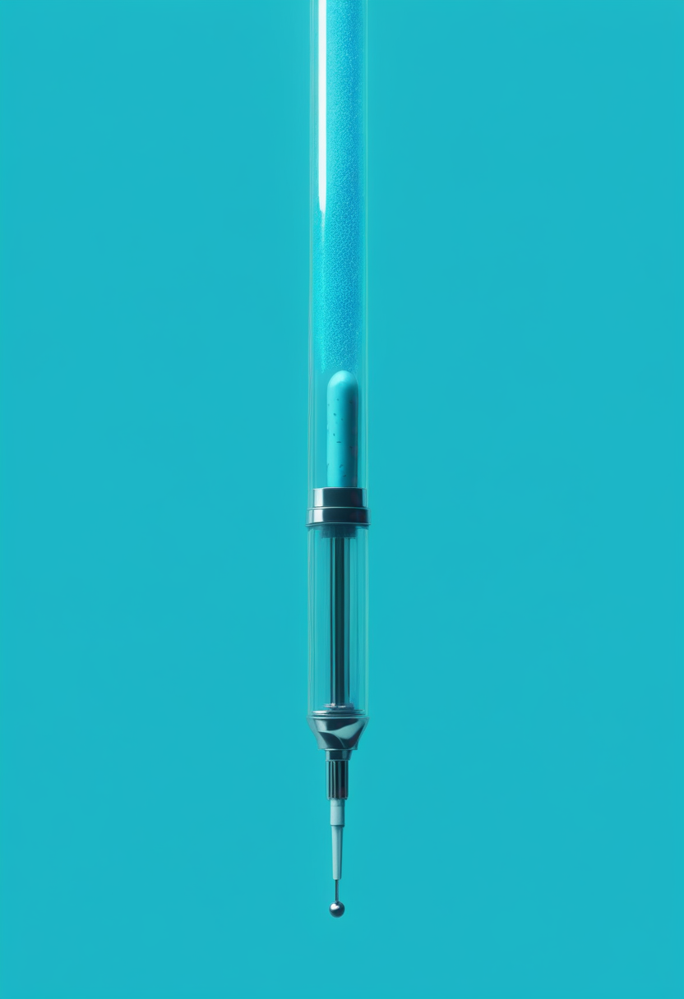
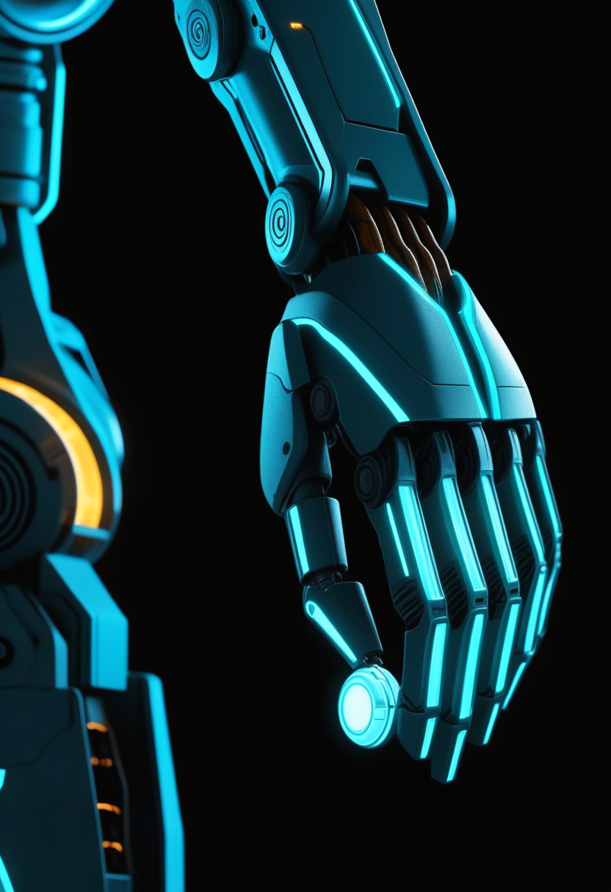
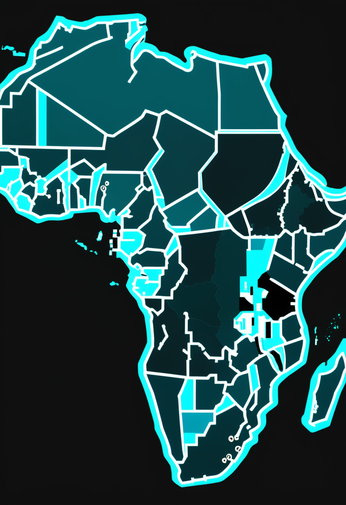
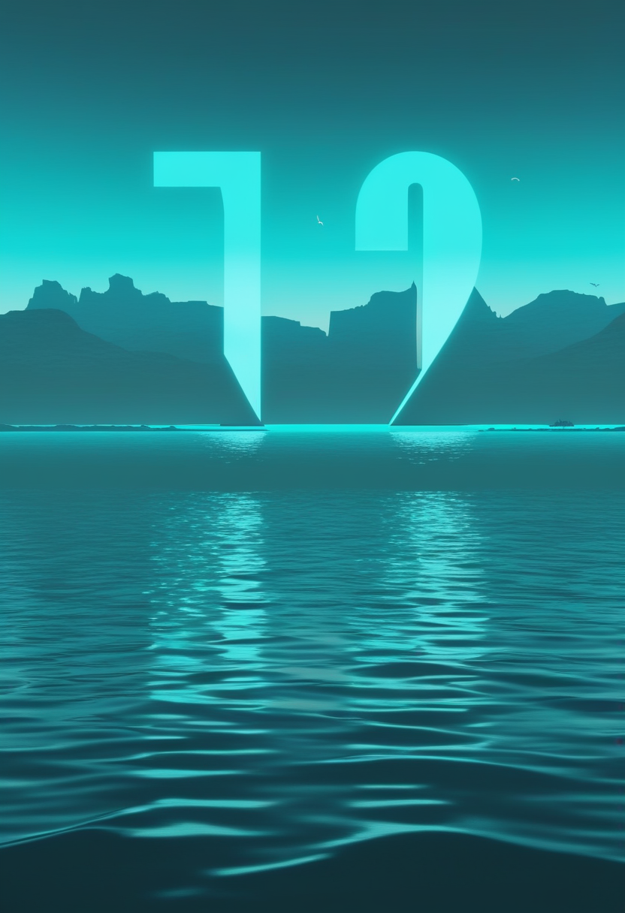
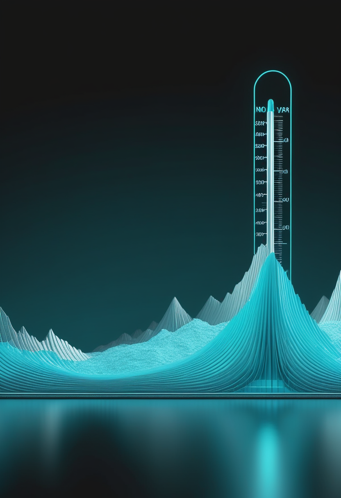
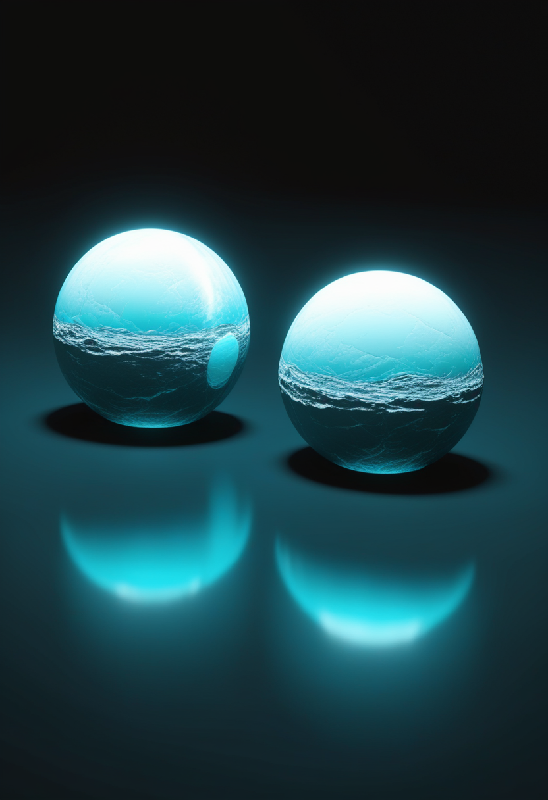

The Daily Signal
10億の光点、
10億の光点、
宇宙の土台になる
DAILY INTELLIGENCE BRIEFING · NO.137 · 2026.11.13 (FRI)
二度延期されたEuclidの最初の大型データが、ついに届いた。待たれていたものが動いた一日。
二度延期されたEuclidの最初の大型データが、ついに届いた。待たれていたものが動いた一日。

10月11日号・11月11日号で公開予定日が二度にわたり後ろ倒しになっていた欧州宇宙機関(ESA)の宇宙望遠鏡Euclidの観測データが、11/12にようやく公開された。「DR1-Foundation」と名づけられた最初の本格データは、2024年春から2025年春までの約13か月間で約1,900平方度(満月約9,500個分)の空を撮影し、10億個を超える天体の光をとらえた内容。銀河が9億個超、「重力レンズ」候補が約1万5,000個、明るいクエーサー候補が6,000万個超、1億6,000万を超える天体のスペクトルを含む。これは6年計画の観測範囲の約14%にあたり、宇宙の約95%を占めるとされる暗黒物質・暗黒エネルギーの正体に迫る「宇宙の3D地図」の土台となる。銀河の分布や重力レンズの解析を加えた完全版DR1は2027年半ばの予定で、データ量は約1.7〜1.8ペタバイトと報じられている。
FDAは11/6の安全性情報で、点滴型ゾルゲンスマだけでなく、同じベクターと遺伝子構造を使う脊髄腔内投与(髄注)製剤Itvismaも調査対象に加えた。Itvismaでは今のところ腫瘍の報告はない。ノバルティスによると2019年の承認以来の治療者は6,000人超で、腫瘍の報告は9件、うち2件でベクターDNAのがん遺伝子GLI1付近への組み込みが確認された。FDAは治療歴のある人や治験参加者の経過観察を求める一方、承認された使い方では利益がリスクを上回るとの立場は変えておらず、回収や販売中止、治験停止は確認されていない。

開発元Ionisが11/9に発表した2026年第3四半期決算によると、販売元バイオジェンによるスピンラザ(ヌシネルセン)の世界売上は4億6,100万ドルで前年同期比23%増。Ionisが受け取るロイヤルティーは6,900万ドル(前年同期5,600万ドル)。より多い量を投与する高用量レジメンが欧州・米国の両方で承認済みで、日本でも高用量向けの28mg・50mg製剤が2025年11月から販売されている。ゾルゲンスマの安全性が議論になる中、既存薬の需要は伸びている。

日本の小児神経科医のグループ(井上健司氏ら)は、背中に針を刺して投与するスピンラザから、飲み薬のリスジプラム(エブリスディ)に切り替えた7人の経過を米国の専門誌Journal of Child Neurologyに報告した。切り替えの主な理由は投与時の痛みだったという。効果の詳しい数字は本号では原文を確認できず要確認。なお成人対象の別の比較研究では、両剤とも約3年にわたり運動機能を同程度に安定させたと報告されている。
ゾルゲンスマとItvismaの調査結果、そしてFDAが添付文書の変更などに踏み込むかが次の焦点。日本でも『痛みの少なさ』を理由にした切り替えの動きがある。
11/12に開かれた『2026脳機接口大会』の記者会見で、中国国内で脳コンピューター・インターフェース(BCI)の恩恵を受けた患者は121例に達したと紹介された。3月に国の医療機器(第3類)として承認された博睿康(Neuracle)の植込み型BCI『NEO』は、商業ベースの植込みが累計12例。上海の補完型医療保険『沪惠保』の対象になり、治療費の最大30%が補償されるという。ただし会社側の別の発表では『13セット販売・8例植込み』とされ、数え方に差がある。2026年版の沪惠保はBCI手術の自己負担材料費を最大15万元まで補償する項目を新設したが、詳しい支払い条件はまだはっきりしない。

頭蓋内に電極を入れる植込み型BCIを開発する上海の阶梯医疗(StairMed)は、10/28時点で長期植込みが42例、被験者の装着日数は延べ5,000日を超えたと公表した。8月には製品承認に向けた多施設登録臨床試験WRS01の参加者登録を完了。首から下がまひした患者が、腕を動かすイメージだけでロボットアームを操作できるとしている。10/30には証券会社と株式上場に向けた指導契約を結んだ。いずれも会社側の発表で、国の承認や試験データの正式公表はまだ。視線入力(アイトラッキング)の新製品・臨床試験の発表は本号でも確認できなかった。
中国は『承認→保険→症例数』の順で実用化の段階に入りつつある。一方で数え方の違いが目立ち、国の公式統計で確かめたい。

AP通信の報道によると、コンゴ民主共和国(DRC)政府は11/11、感染11,042例・死者5,387人を発表した(政府発表の数字でECDC・CDCの集計とは日付・定義が異なる、要確認)。国境なき医師団(MSF)は11/12、流行は『依然として制御できていない』とし、直近1か月のエボラ関連の死者の約3分の2が治療施設でなく地域の中で亡くなっていると指摘した。英インペリアル・カレッジのニール・ファーガソン教授は『実際の患者の約半分しか見つけられていない可能性が高い』と述べている。流行は全26州のうち8州に広がり、原因のブンディブギョ型には承認されたワクチンも治療薬もない。

ケニアでは10/6にDRCからの輸入例が確認されて以来、計9例(うち死者2人)が報告された。保健省は11/6時点で6人目の回復者の退院を発表し『治療中は残り1人』としていたが、その後、最後の患者が退院し、エボラのない状態を宣言するための42日間のカウントダウンが始まったと報じられた(開始日は要確認)。最後の確定例は10/19。WHOの基準では、最後の患者の血液検査が48時間以上あけて2回陰性になってから42日間、新しい感染がなければ終息を宣言できる。保健省は『周辺国で流行が続いており油断はできない』としている。

11/12時点でも、汎米保健機構(PAHO)は米国の『麻疹排除』の地位について最終判断を公表していない。米国の確定例は少なくとも5,182例(45州とワシントンDC)。焦点は、2025年1月20日に西テキサスで始まった流行と、サウスカロライナ州などその後の流行が遺伝的につながっているかどうかだ。日本では第44週(10/26〜11/1)のインフルエンザの定点当たり報告数が10.26と、注意報レベルの目安(10)を超えた(前年同期は14.90)。第45週(11/2〜11/8)分は本日11/13に厚生労働省が公表予定。
エボラは公式の数字だけで1万1,000例を超え、『見えていない患者』が同じくらいいる可能性も。ケニアは周辺国で初めて終息に近づく例になるか。日本のインフルは今日公表の第45週の数字で増加が続くかを確認したい。
ESAのEuclidは11/12、約13か月分(2024年春〜2025年春)の観測をまとめたDR1-Foundationを公開した。範囲は約1,900平方度で、銀河9億個超、重力レンズ候補約1万5,000個、クエーサー候補6,000万個超、1億6,000万天体超のスペクトルを含む。2025年3月の速報版(Q1)に比べて大幅に広く、6年間で予定する観測範囲の約14%にあたる。銀河の集まり方や重力レンズによる像のゆがみから暗黒物質の分布と宇宙の膨張の歴史を調べる研究用データは、2027年半ばの完全版DR1で加わる。

NASAの研究者らは、ESAとNASAが2030年代の打ち上げを目指す宇宙重力波望遠鏡LISAを使い、2つの白色矮星(燃え尽きた星)が回り合う連星の周りの惑星を見つける手法を、アストロフィジカル・ジャーナル誌の2本の論文で発表した(11/10)。惑星があると連星が出す重力波の信号にわずかなずれが生じることを利用するもので、光では見つけにくい天の川銀河の遠くの惑星も探せる可能性がある。宇宙重力波の分野では中国科学院も11/10、宇宙での重力波検出に向けた新しい位相読み出しの手法を発表している(詳細は要確認)。
米リジェネロンの第2相試験COURAGEが11/11、ランセット誌にオンライン掲載された。肥満症の人(BMI30以上、糖尿病なし)605人で、やせ薬セマグルチドに筋肉の成長を抑えるたんぱく質マイオスタチンを阻害する抗体トレボグルマブを併用すると、26週時点の除脂肪量(主に筋肉)の減少は、セマグルチド単独の6.5%に対し200mg併用で3.3%、400mg併用で3.8%と約半分に抑えられた。ガレトスマブを加えた3剤併用は2.0%だったが、副作用による中止が多く死亡が2例あった。マイオスタチン経路は、SMAの新薬ISEMBYLD(アピテグロマブ)と同じ『筋肉を狙う』考え方でもある。
Euclidのデータは世界中の研究者が使えるため、暗黒物質の地図や珍しい重力レンズの発見が今後相次ぎそう。医学では『やせても筋肉は守る』併用療法の安全性が次の論点。
北京市昌平区の大陵溝(ダーリンゴウ)遺跡で、隋代(581〜618年)の長城区間が北京で初めて確認されたと、北京市文物研究所が11月初めの『京津冀考古学術交流会』で発表した。約800平方メートルを8〜10月にかけて発掘したところ、全国調査では北斉(550〜577年)の城壁と分類されていた遺構から、隋代の軍事拠点が見つかった。研究者は、隣接する河北省・山西省に残る北斉時代の城壁の線上に似た手がかりがあることから、隋が北斉の城壁の大部分を再利用した可能性があるとみている。同じ発表では、豊台区で約1,800年前(漢・晋代)の木造船3隻の遺構も報告された。
AP通信の報道によると、アフガニスタン・カブールの崩れかけた要塞バラ・ヒッサールで修復作業を進める考古学者らが、仏教僧院の遺構とムガル帝国時代の宮殿にあった豪華な浴場の跡を発見した。5つの発掘区で、古代のコイン、仏像の破片、彩釉のイスラム陶器、オイルランプ、陶器などが見つかっている。考古学者のババク・ラフィエイ=アラヴィ氏は『バラ・ヒッサールはどこを掘っても何かが出てくる、2,000年以上人が住み続けてきた場所だから』と述べた。アフガニスタン情報文化省は、同遺跡で歴史的な遺物648点を回収したと報告している。計画はバラ・ヒッサール全体をカブール最大の公共の緑地・初の指定『遺跡公園』として再生することも目指している。
北京とカブールでは、長く別の時代と分類されていた遺構が、発掘の積み重ねで書き換えられつつある。歴史は一度確定した後も、掘るたびに姿を変える。
今号の軸は『長く待たれていたものが、ようやく動いた日』だった。Euclidの宇宙地図は二度の延期を経て公開され、ケニアのエボラは最後の1人の退院でカウントダウンに入った。北京とカブールの遺跡では、何十年も別の時代だと思われていた土の下から、新しい物語が姿を見せた。
数字が動くたびに、まだ見えていないものの輪郭も浮かび上がる。おやすみなさい、また明日。